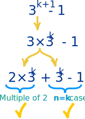
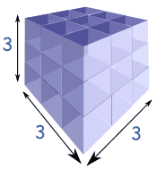

Mathematical Induction
Mathematical Induction is a special way of proving things. It has only 2 steps:
- Step 1. Show it is true for the first one
- Step 2. Show that if any one is true then the next one is true
Then all are true
Have you heard of the "Domino Effect"?
- Step 1. The first domino falls
- Step 2. When any domino falls, the next domino falls
So ... all dominos will fall!
That is how Mathematical Induction works.
In the world of numbers we say:
- Step 1. Show it is true for first case, usually n=1
- Step 2. Show that if n=k is true then n=k+1 is also true
How to Do it
Step 1 is usually easy, we just have to prove it is true for n=1
Step 2 is best done this way:
- Assume it is true for n=k
- Prove it is true for n=k+1 (we can use the n=k case as a fact.)
It is like saying "IF we can make a domino fall, WILL the next one fall?"
Step 2 can often be tricky, we may need to use imaginative tricks to make it work!
Like in this example:
Example: is 3n−1 a multiple of 2?
Is that true? Let us find out.
1. Show it is true for n=1
31−1 = 3−1 = 2
Yes 2 is a multiple of 2. That was easy.
31−1 is true
2. Assume it is true for n=k
3k−1 is true
(Hang on! How do we know that?
We don't!
It is an assumption ... that we treat
as a fact for the rest of this example)
Now, prove that 3k+1−1 is a multiple of 2

3k+1 is also 3×3k
And then split 3× into 2× and 1×
And each of these are multiples of 2
Because:
- 2×3k is a multiple of 2 (we are multiplying by 2)
- 3k−1 is true (we said that in the assumption above)
So:
3k+1−1 is true
DONE!
Did you see how we used the 3k−1 case as being true, even though we had not proved it? That is OK, because we are relying on the Domino Effect ...
... we are asking if any domino falls will the next one fall?
So we take it as a fact (temporarily) that the "n=k" domino falls (i.e. 3k−1 is true), and see if that means the "n=k+1" domino will also fall.
Tricks
I said before that we often need to use imaginative tricks.
A common trick is to rewrite the n=k+1 case into 2 parts:
- one part being the n=k case (which is assumed to be true)
- the other part can then be checked to see if it is also true
We did that in the example above, and here is another one:
Example: Adding up Odd Numbers
1 + 3 + 5 + ... + (2n−1) = n2
1. Show it is true for n=1
1 = 12 is True
2. Assume it is true for n=k
1 + 3 + 5 + ... + (2k−1) = k2 is True
(An assumption!)
Now, prove it is true for "k+1"
1 + 3 + 5 + ... + (2k−1) + (2(k+1)−1) = (k+1)2 ?
We know that 1 + 3 + 5 + ... + (2k−1) = k2 (the assumption above), so we can do a replacement for all but the last term:
k2 + (2(k+1)−1) = (k+1)2
Now expand all terms:
k2 + 2k + 2 − 1 = k2 + 2k+1
And simplify:
k2 + 2k + 1 = k2 + 2k + 1
They are the same! So it is true.
So:
1 + 3 + 5 + ... + (2(k+1)−1) = (k+1)2 is True
DONE!
Your Turn
Now, here are two more examples for you to practice on.
Please try them first yourself, then look at our solution below.
Example: Triangular Numbers
Triangular numbers are numbers that can make a triangular dot pattern.

Prove that the n-th triangular number is:
Tn = n(n+1)/2

Example: Adding up Cube Numbers
Cube numbers are the cubes of the Natural Numbers
Prove that:
13 + 23 + 33 + ... + n3 = ¼n2(n + 1)2
. . . . . . . . . . . . . . . . . .
Please don't read the solutions until you have tried the questions yourself, these are the only questions on this page for you to practice on!
Example: Triangular Numbers
Prove that the n-th triangular number is:
Tn = n(n+1)/2
1. Show it is true for n=1
T1 = 1 × (1+1) / 2 = 1 is True
2. Assume it is true for n=k
Tk = k(k+1)/2 is True (An assumption!)
Now, prove it is true for "k+1"
Tk+1 = (k+1)(k+2)/2 ?
We know that Tk = k(k+1)/2 (the assumption above)
Tk+1 has an extra row of (k + 1) dots
So, Tk+1 = Tk + (k + 1)
(k+1)(k+2)/2 = k(k+1) / 2 + (k+1)
Multiply all terms by 2:
(k + 1)(k + 2) = k(k + 1) + 2(k + 1)
(k + 1)(k + 2) = (k + 2)(k + 1)
They are the same! So it is true.
So:
Tk+1 = (k+1)(k+2)/2 is True
DONE!
Example: Adding up Cube Numbers
Prove that:
13 + 23 + 33 + ... + n3 = ¼n2(n + 1)2
1. Show it is true for n=1
13 = ¼ × 12 × 22 is True
2. Assume it is true for n=k
13 + 23 + 33 + ... + k3 = ¼k2(k + 1)2 is True (An assumption!)
Now, prove it is true for "k+1"
13 + 23 + 33 + ... + (k + 1)3 = ¼(k + 1)2(k + 2)2 ?
We know that 13 + 23 + 33 + ... + k3 = ¼k2(k + 1)2 (the assumption above), so we can do a replacement for all but the last term:
¼k2(k + 1)2 + (k + 1)3 = ¼(k + 1)2(k + 2)2
Multiply all terms by 4:
k2(k + 1)2 + 4(k + 1)3 = (k + 1)2(k + 2)2
All terms have a common factor (k + 1)2, so it can be canceled:
k2 + 4(k + 1) = (k + 2)2
And simplify:
k2 + 4k + 4 = k2 + 4k + 4
They are the same! So it is true.
So:
13 + 23 + 33 + ... + (k + 1)3 = ¼(k + 1)2(k + 2)2 is True
DONE!